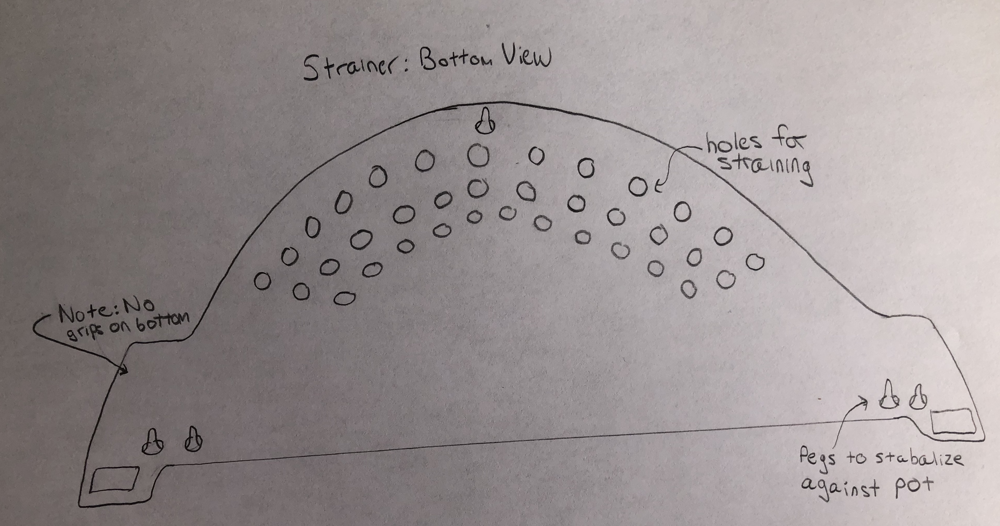
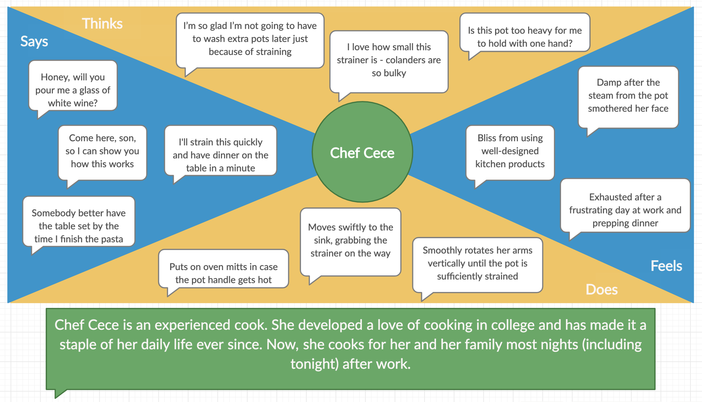

Introduction
What happens when you ask people to use an unusual kitchen tool?
I set out to find out. In my apartment,
we have a distinct kind of strainer - something most people have never seen before.
I asked three friends
to use the strainer. I documented their interactions and asked them questions about their experiences.
I then created two personas that represent possible users of the strainer. Finally, I designed a storyboard
for one of the personas.
Design
The hand-held strainer is a mostly flat, semi-circle of plastic. It is punctured with small holes
to facilitate straining and wide handles to comfortably hold the strainer. The bottom of the
surface contains small pegs to help anchor the strainer against the pot.
To use it, you place
the strainer on top of the pot and turn the pot over while keeping the strainer pressed to the rim.

Personas
These responses led me to create two personas: "Snackpass Sam" and "Chef Cece." These personas differ
in a few keys ways, most importantly with their experience in the kitchen. I creted the
empathy maps on the right hand side to dive deeper into the personalities and motivations of the personas.

